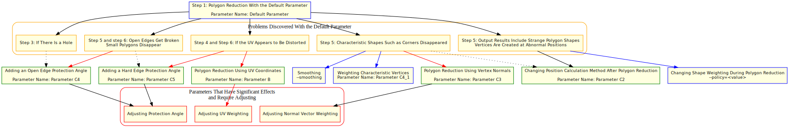

Introduction
This section describes how to create LOD models. The following issues are addressed with the goal of making LOD models easier to use.
- Potential problems with each model
- Appropriate parameter settings for each model
The descriptions mainly use topographical data, but reduction of character data is also possible using the same approach. Excerpts from the following documentation are used in the descriptions.
Detailed Documentation
For more information about implementing polygon reduction and the parameters, see Polygon Reduction.
Command-Line Tool Help Documentation
For more information about runtime parameters, see Intermediate File Optimizer.
Tutorial Overview
This tutorial performs polygon reductionon the following model:
%NINTENDO_SDK_ROOT%\Samples\Sources\Applications\G3dDemo\Resources\town\bg_WhiteTown\bg_WhiteTown.fmdb
(The following documentation refers to this model as either the Town model, or simply as Town.)
Using actual results and figures, the tutorial describes how to apply parameters to correctly run reductions for the model.
Figure 1-1 shows the final result of running the reduction.
|
|
|
|---|---|
| Figure 1-0. Before Reduction (137,687 Polygons) | Figure 1-1. Reduction Result (34,368 Polygons) |
Parameter Determination Flowchart
The flowchart depicts the initial process of parameter determination.
The parameter names in the flowchart correspond to the parameters shown in the each step in the tutorial. The step numbers in the flowchart correspond to the steps in this tutorial.
Each step describes the relevant parameters and provides figures showing how the parameters affect the polygon reduction results. Each step also includes links to more detailed technical information and the command-line parameters.
|

|
|
Parameter Determination Flowchart After the Default Parameter Has Been Applied
Dashed arrow: Low-priority parameters that nevertheless have a noticeable effect. Red arrow: Particularly important parameters. Blue arrow: Not covered in detail in this tutorial. These parameters are rarely used. |
The following description covers the parameters presented in the flowchart. Each parameter is described in more detail in subsequent steps of the tutorial.
By dragging the model intermediate files to the batch file located in the following folder, you can perform polygon reduction on any file using the configured parameters.
%NINTENDO_SDK_ROOT%\Samples\Sources\Tools\3dTools\3dIntermediateFileOptimizer\PolygonReductionTutorial
Before trying various combinations of parameter sets, try Parameter E, which yields a moderate polygon reduction result, and then adjust the reduction rate as necessary to achieve the desired result.
CONFIDENTIAL